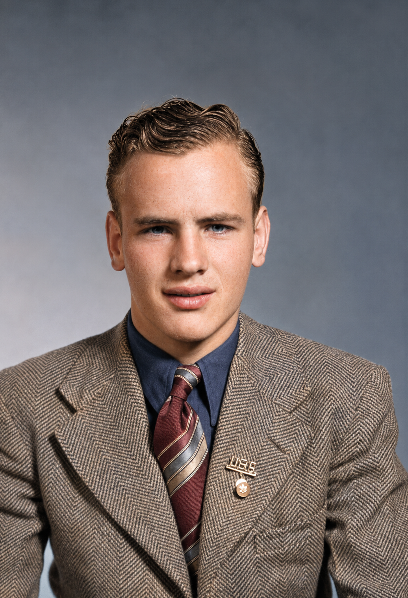

Freestone family · Person
Clyde Thomas Freestone
1923–2010

- Names in the records
- Tom Freestone, Clyde Thomas “Tom” Freestone
- Born
- November 25, 1923 · Vernal, Utah
- Died
- April 26, 2010 · Vernal, Utah
- Burial
- Vernal, Utah
- Occupations
- Ranching, Juvenile court services
The obituary summary describes Tom as a B-17 aerial gunner who was wounded and taken prisoner after an aircraft loss near Vienna. County history reportedly records his 1964 appointment to direct juvenile court services for five eastern Utah counties. Family research also records ranching, local preservation, education and parkland donation.
Family connections
Parents Adora Elvira Batty, Reuben Thomas Freestone
Grandparents Eraimine Georgine Lind, George Freestone
Spouses and partners Maurine Peterson
Children with Maurine Peterson: Judy Maurine Freestone
Siblings Ivan Wilson Freestone (Full sibling) · LeeOra Freestone (Full sibling)
Relationship evidence
- Marriage · Maurine Peterson · Family record
- Event date
- 1947-06-24
- Place
- Orem, Utah
Sources · Family research brief · FamilySearch profile · Clyde Thomas Freestone
- Parent · Reuben Thomas Freestone · Family record
Sources · Family research brief · FamilySearch profile · Clyde Thomas Freestone
- Parent · Adora Elvira Batty · Family record
Sources · Family research brief · FamilySearch profile · Clyde Thomas Freestone
- Child · Judy Maurine Freestone · Family record
Sources · Family research brief
Places Vernal, Utah, Vienna, Austria, Little Brush Creek, Utah
Timeline Tom Freestone’s wartime service and captivity · Tom Freestone and Maurine Peterson marry · Tom reportedly appointed to juvenile court services
Stories The Freestone Story · Tom Freestone: From Prisoner of War to a Lifetime of Service
Research questions Document Tom Freestone’s service and captivity · Recover the full Reuben and Adora household
Sources · Family research brief · Clyde Thomas Freestone obituary · A History of Uintah County: Scratching the Surface · FamilySearch profile · Clyde Thomas Freestone